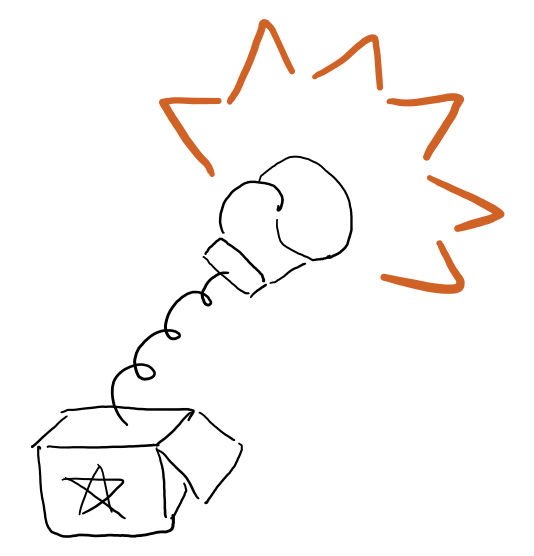

Functional JavaScript
This is an introducing chapter will explain the following:
- Why JavaScript is a functional language?
- Why do we care?
- Why underscore is not functional?
- What's missing in JavaScript as a functional language?
Before Reading This Book, You Better…
Be able to read JavaScript code, that's it
It's neither a textbook for Clojure nor for JavaScript, of course I'm gonna borrow the functional part of clojure and introduce into JavaScript, but it's all about functional programming in JavaScript, Clojure code in this book is relatively simple and for demonstrating functional thinking.
You bought the wrong book if you're
trying to learn JavaScript
Still, it's not textbook for JavaScript, for whoever want to learn JavaScript I highly recommend JavaScript The Good Parts and JavaScript Allong.
trying to learn Clojure
Again, it's not a textbook for Clojure/Script either, all Clojure snippet in this book is for demonstrating purpose only, for whoever want to learn Clojure, The Joy of Clojure is a good choice, and alternately, Brave Clojure for online reading.
For expert of functional language
If you already programming with languages such as Scala, Clojure or Haskell, you're probably not going to get much benafit from the functional part of this book. Howerver, if you want to migrate to JavaScript, this book will be pretty helpful for you, for you will find similar approach from those languages in javascript.
Env Setup
Before start reading, if you like to run all the example code in this book, you better setup a cozy environment first. it won't take long :)
JavaScript
There are two options you can run native javascript code, Modern Browser(Firefox,Chrome) and Node.js. Eventually, there will be some code including macro that which require sweet.js to compile. Alternately, pasting codes in http://ru-lang.org/try is a good choice though.
Install Node/iojs
- Download from https://nodejs.org/
- or if you're using mac, just
brew install node
- using n to maintain multiple version of node
npm install n -g # then n install stable
Install sweet.js
npm install -g sweet.js
Clojure
If you like to run all clojure expamle as well, please make sure you have JVM/JDK installed first, then…
install leiningen
leiningen package manager of clojure, equivalent of npm to node, bundle to ruby, pip to ruby. Plus, you can also using leinigen as scaffolding tool. you can get install instruction from official website。
then, all clojure code can be safely running in repl
lein repl
user=> (+ 1 1)
2
Editor
LightTable is good clojure editor for non-emacs user.Off cause emacs still the best editor I ever used.
So, Functional JavaScript, you sure?
When people taking about functional language, probably Haskell, Scala, Clojure will come to your mind first. But, JavaScript can be functional as well as those languages. JavaScript is actually a multi-paradigm programming language.
There are about 3 kinds of programming paradigm we normally using: Imperative, Object Oriented and Functional of cause. (and there is a 4th kind of paradigm: Logic Programming we will take about it in the last chapter).
Imperative
It's the probably most used and less need of design kind of programming paradigm. You basically write program like just some kind of ordered list of commands.
for(var i=0;i<10;i++){ console.log('command #',i) }
Object Oriented
Also, it's very common, and with a little bit design needed while you programming. So when you programming, you modeling or abstracting you App like Objects in the real world. Objects can be compose by other objects, or inherent from other objects.
Functional
It's like solving Math problems, you need to abstract some sort of expressions, and eval them with known input, the you get a value based on that input. But it's never such simple, when you abstract a good expression, it better be pure, immutable, composable…

Logic
You may not hear this term very often, but it's basically just like SQL query which we may sometimes writing. So, it's just questions, for example if I want to count how many foot 3 chickens have, simply just multiply chicken number and foot number each chickens have. But what if I ask "how many foot chicken boys have?", how can you get a function to give the answer? with SQL query it's easy:
select count(*) from chicken where sex='boy'
so for Logic Programming, Clojure provide a handy library called core.logic, but I'm going to talk about datascript in the last chapter for explaining more about logic programming in JavaScript.
JavaScript Native Functional Support
Let's focus on how functional JavaScript can be?
First Class Function
Fist class function means function that can be treat as value, so it can get anywhere value can. So just like a value, a function can be other function's parameter, a function can be return by other function, and that other function is aka Higher-order Function.
Function as Parameter
So one typical usage of function as parameter is map, so you can
[1,2,3,4].map(function(x){return ++x}) // => [2,3,4,5]
Think about how we gonna implement the same thing if not using map:
var array = [1,2,3,4]; var result = []; for(var i in array){ result.push(++i); } console.log(result);
The old imperative code just look more lower lever, no any abstraction at all, programmer need to think about nearly every step the machine can understand. But with the abstraction of map for Array, we kind of just don't care about how the Array should be iterated – the process, we need to specify what we want to do with each element, and Array will take care of everything else.
Return a Function
You may seeing this eventually and maybe you didn't know. They have very fancy name depends how we return the function.
- Currying
A function that consume one argument at a time is called Curried Function. how to make it so is called Curry.
var curriedSum = curry(sum) var sum5 = curriedSum(5) var sum5and4 = sum5(4) //=> 9 sum5and4(3) // => 12
The rationale of doing so is simple, we can configure part of the function and reuse it later, so every function can be composable when giving it each parameter. I will talk more about Curry in Chapter 4 anyway.
- Thunk
A thunk is something not executed yet, but waiting someone to click the Button. I'll explain thunk in Section 2.4 - Lazy Sequence.

Figure 2: Thunk is like a container with a open button